Ch10 Graphs¶
10.1 Graphs and Graph Models¶
1. The Concept of Graph¶
- 【Definition 1】A graph图 \(G=(V,E)\) consists of \(V\), a nonempty set of vertices顶点 and \(E\), a set of edges 边. Each edge has either one or two vertices associated with it, called its endpoints端点. An edge is said to connect its endpoints.
- Infinite graph无限图: a graph with an infinite vertex set or an infinite number of edges
- Finite graph有限图: a graph with an finite vertex set and a finite number of edges
- 【Definition 2】A directed graph有向图 (or digraph) \((V, E)\) consists of a nonempty set of vertices \(V\) and a set of directed edges (or arcs) \(E\).
Each directed edge is associated with an ordered pair of vertices. The directed edge associated with the ordered pair \((u,v)\) is said to start at \(u\) and end at \(v\).
Types of Graphs¶
- Undirected graph无向图 : a graph with undirected edges.
- Simple graph简单图 : A graph in which each edge connects two different vertices and where no two edges connect the same pair of vertices.
- Multigraph多重图 : Graphs that may have multiple edges connecting the same vertices.
-
Pseudograph伪图 : Graphs that may include loops, and possibly multiple edges connecting the same pair of vertices
-
Directed graph有向图 : a graph with directed edges.
-
Simple directed graph简单有向图 : a directed graph has no loops and has no multiple directed edges.
-
Directed multigraph有向多重图 : a directed graphs that may have multiple directed edges from a vertex to a second (possibly the same) vertex.
-
Mixed graph混合图 : a graph with both directed and undirected edges.
2. Graph Models¶
Omitted
10.2 Graph Terminology and Special Types of Graphs¶
1. Basic Terminology¶
Undirected Graphs¶
-
Two vertices, u and v in an undirected graph G are called adjacent相邻 (or neighbors) in \(G\), if \(\{u, v\}\) is an edge of \(G\).
-
An edge \(e\) connecting \(u\) and \(v\) is called incident with vertices \(u\) and \(v\), or is said to connect \(u\) and \(v\).
-
The vertices \(u\) and \(v\) are called endpoints of edge \(\{u, v\}\).
-
Loop: an edge connects a vertex to itself.
-
The neighborhood of \(v (N(v))\): the set of all neighbors of a vertex \(v\)
-
The degree度数 of a vertex in an undirected graph is the number of edges incident with it, except that a loop at a vertex contributes twice to the degree of that vertex
Notation: \(deg(v)\)
- If \(deg(v) = 0\), \(v\) is called isolated孤立的.
- If \(deg(v) = 1\), \(v\) is called pendant下垂的.
【Theorem 1】 The Handshaking Theorem握手定理 : Let \(G = (V, E)\) be an undirected graph \(G\) with \(e\) edges. Then \(\sum_{v\in V}deg(v)=2e\)
【Theorem 2】 An undirected graph has an even number of vertices of odd degree. 在无向图中，度为奇数的顶点个数为偶数
Directed Graphs¶
Let \((u, v)\) be an edge in \(G\). Then \(u\) is an initial vertex起点 and is adjacent to \(v\) and \(v\) is a terminal vertex终点 and is adjacent from \(u\). The in degree入度 of a vertex \(v\), denoted \(deg⁻(v)\), is the number of edges which terminate at \(v\). Similarly, the out degree出度 of v, denoted \(deg⁺(v)\), is the number of edges which initiate at \(v\).
【Theorem 3】Let \(G = (V, E)\) be a graph with direct edges. Then \(\sum_{v\in V}d^+(v)=\sum_{v\in V}d^-(v)=|E|\)
2. Some Special Simple Graphs¶
- Complete Graphs完全图 - \(K_n\)
exactly one edge between every pair of distinct vertices
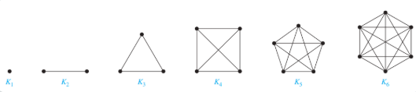
- Cycles环 - \(C_n (n>2)\)
\(C_n=(V,E),where \space V=\{v_1,v_2,\dots , v_n\},E=\{(v_1,v_2),(v_2,v_3),\dots , (v_{n-1},v_n),(v_n,v_1)\},n \geq 3\)
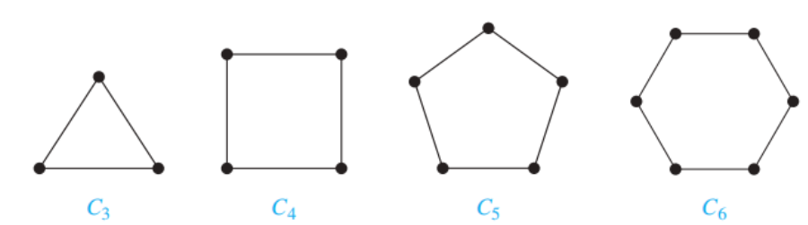
- Wheels轮 - \(W_n(n>2)\)
Add one additional vertex to the cycle \(C_n\) and add an edge from each vertex to the new vertex to produce \(W_n\).
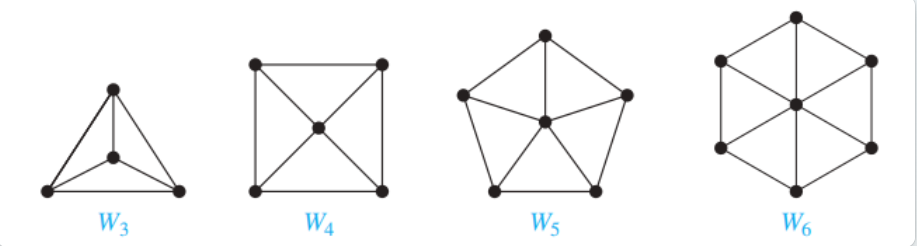
- n-Cubes - \(Q_n (n>0)\)
$\(Q_n = \langle V, E \rangle\)$ is a graph with $\(2^n\)$ vertices representing bit strings of length n, where \(V = \{ v | v = a_1a_2...a_n, a_i = 0, 1, i = 1, 2, ..., n \}\) and \(E = \{ (u, v) | u, v \in V \land u \text{ and } v \text{ differ in exactly one bit position }\}.\)
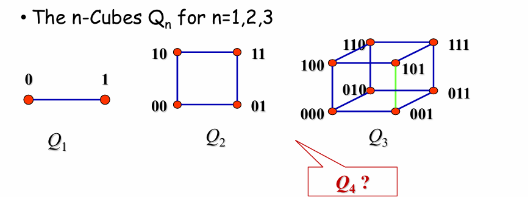
Construct \(Q_{n+1}\) from \(Q_n\)
making two copies of \(Q_n\) , prefacing the labels on the vertices with a \(0\) in one copy and with a \(1\) in the other copy
adding edges connecting two vertices that have labels differing only in the first bit
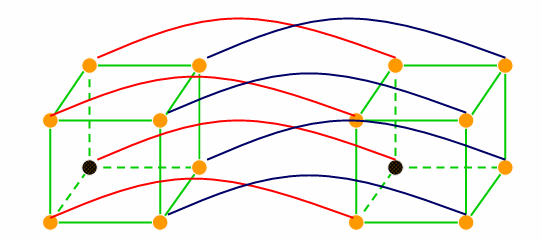
The number of edges: \(a_n=2a_{n-1}+2^{n-1}\)
3. Bipartite Graphs¶
-
A simple graph $ G $ is bipartite二分的 if $ V $ can be partitioned into two disjoint subsets $ V_1 $ and $ V_2 $ such that every edge connects a vertex in $ V_1 $ and a vertex in $ V_2 $.
-
The pair $ {V_1, V_2} $ is called a bipartition二分 of the vertex $ V $ of $ G $.
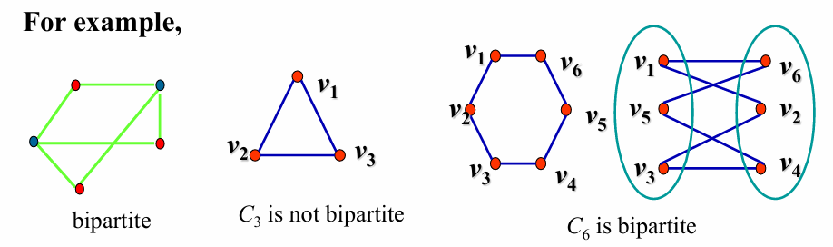
-
【Theorem 4】 A simple graph is bipartite if and only if it is possible to assign one of two different colors to each vertex of the graph so that no two adjacent vertices are assigned the same color.
-
The complete bipartite graph完全二分图 is the simple graph that has its vertex set partitioned into two subsets $ V_1 $ and $ V_2 $ with $ m $ and $ n $ vertices, respectively, and every vertex in $ V_1 $ is connected to every vertex in $ V_2 \(, denoted by ==\) K_{m,n} $==, where $ m = |V_1| $ and $ n = |V_2| $.
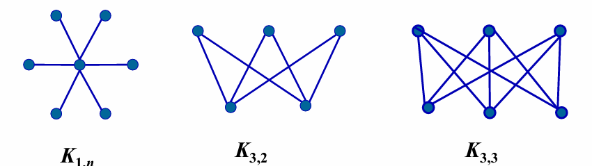
4. Regular graph Regular graph¶
- A simply graph is called regular if every vertex of this graph has the same degree.
- A regular graph is called n-regular if every vertex in this graph has degree \(n\)
5. New Graphs From Old¶
Subgraph¶
$ G = (V, E) $, $ H = (W, F) $
-
$ H $ is a subgraph子图 of $ G $ if $ W\subseteq V$, \(F \subseteq E\).
-
subgraph $ H $ is a proper subgraph真子图 of $ G $ if $ H \neq G $.
-
$ H $ is a spanning subgraph生成子图 of \(G\) if \(W = V\), \(F \subseteq E\)
-
Subgraph induced点诱导子图 by a subset of \(V\)
Let \(G=(V,E)\) be a simple graph. The subgraph induced by a subset W of the vertex set V is the graph \((W,F)\), where the edge set \(F\) contains an edge in \(E\) iff both endpoints of this edge are in \(W\)
定一个图 \(G=(V,E)\)，其中 \(V\) 是顶点集合，\(E\) 是边集合，对于 \(V\) 的任意非空子集 \(S\)，由 \(S\) 中的顶点以及 \(G\) 中连接这些顶点的所有边组成的子图称为由 S 点诱导的子图。
得到新图的方式
- Removing edges of a graph : \(G-e=(V,E-\{e\})\)
- Adding edges to a graph : \(G+e=(V,E+\{e\})\)
- Edge contration 边压缩 :
- Remove an edge \(e\) with endpoints \(u\) and \(v\),
- merge \(u\) and \(v\) into a new single vertex \(w\),
- and for each edge with \(u\) or \(v\) as an endpoint replaces the edge with one with \(w\) as endpoint in place of \(u\) and \(v\) and with the same second endpoint.
- Removing vertices from a graph : \(G-v =(V-v, E’)\), where \(E’\) is the set of edges of \(G\) not incident to \(v\)
6. Graph Union¶
The union of two simple graphs \(G1 = ( V1 , E1 )\) and \(G2 = ( V2 , E2 )\) is the simple graph with vertex set \(V = V1 ∪ V2\) and edge set \(E = E1 ∪ E2\).
- Notation: \(G1 ∪ G2\)
10.3 Representing Graphs and Graph Isomorphism¶
1. Adjacency lists¶
- lists that specify the vertices that are adjacent to each vertex
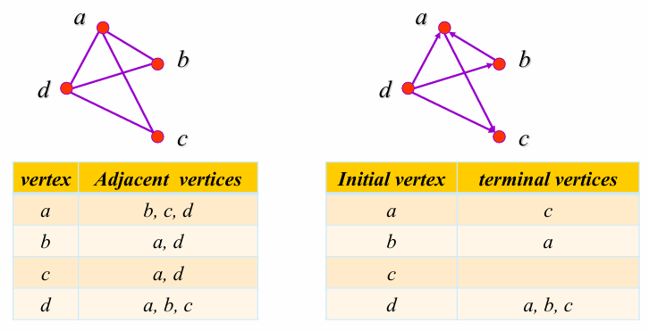
2. Adjacency Matrices¶
- A simple graph \(G = (V, E)\) with \(n\) vertices \((v_1,v_2,\dots,v_n)\) can be represented by its adjacency matrix邻接矩阵, \(A\), where \(a_{ij} = 1\) if \(\{v_i, v_j \}\) is an edge of \(G\), \(a_{ij} = 0\) otherwise.
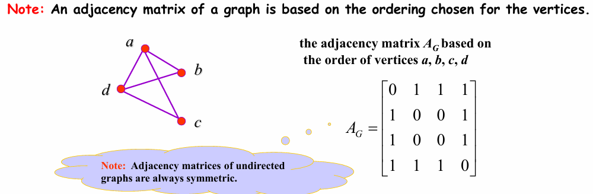
- The adjacency matrix of a multigraph or pseudograph
The \((i, j)th\) entry of such a matrix equals the number of edges that are associated to \(\{v_i, v_j\}\).
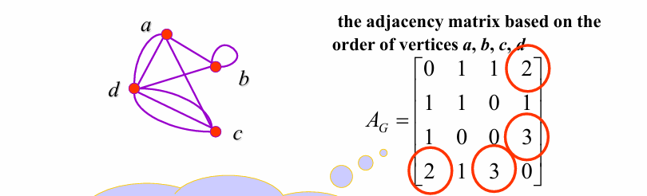
- The adjacency matrix of a directed graph
For directed graph \(G = (V, E)\) with \(|V| = n\), suppose that the vertices of \(G\) are listed in arbitrary order as \(v_1, v_2, …, v_n\), the adjacency matrix \(A = [a_{ij}]\), where \(a_{ij} = 1\) if \((v_i, v_j)\) is an edge of \(G\), \(a_{ij} = 0\) otherwise.
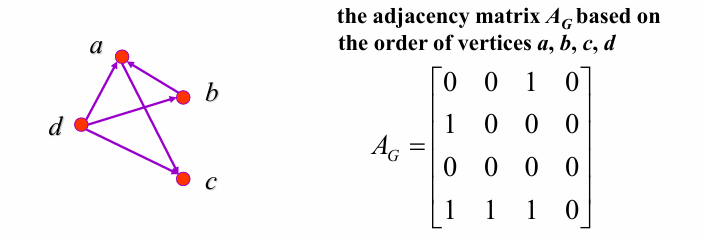
3. Incidence matrices¶
\(G = (V, E)\), \(V = \{v_1, v_2, ..., v_n\}\), \(E = \{e_1, e_2, ..., e_m\}\). The incidence matrix关联矩阵 with respect to this ordering of \(V\) and \(E\) is an \(n \times m\) matrix \(M = [m_{ij}]_{n \times m}\), where \(m_{ij} = \begin{cases} 1 & \text{when edge } e_j \text{ is incident with } v_i \\ 0 & \text{otherwise} \end{cases}\)
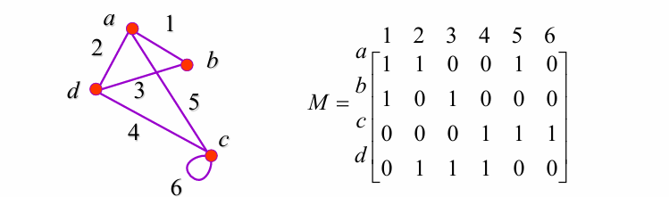
4. Isomorphism Of Graphs¶
- Two simple graphs $ G_1 = (V_1, E_1) $ and $ G_2 = (V_2, E_2) $ are isomorphic同构的 if there is a \(1-1\) and onto function $ f $ ($ f $ is called an isomorphism) from $ V_1 $ to $ V_2 $ such that for all $ a $ and $ b $ in $ V_1 $, $ a $ and $ b $ are adjacent in $ G_1 $ iff $ f(a) $ and $ f(b) $ are adjacent in $ G_2 $.
- In other words, when two simple graphs are isomorphic, there is a one-to-one correspondence between vertices of the two graphs that preserves the adjacency relationship.
How to determine?¶
-
It is usually difficult to find an isomorphism \(f\) since there are \(n!\) possible \(1-1\) correspondence between the two vertex sets with \(n\) vertices.
-
some properties (called invariants不变量) in the graphs may be used to show that they are not isomorphic
Important invariants in isomorphic graphs:
- the number of vertices
- the number of edges
- the degrees of corresponding vertices
- if one is bipartite, the other must be
- if one is complete, the other must be
- if one is a wheel, the other must be etc.
10.4 Connectivity¶
1. Paths¶
The concept of path : In \(G = (V, E)\), it is usually considered that starting from one vertex and terminating at another vertex by passing along some edges.
Definition of path in undirected graph¶
- Path of length \(n\) from \(u\) to \(v\) in an undirected graph
-
a sequence of \(n\) edges \(e_1, ..., e_n\) for which there exists a sequence \(x_0=u, x_1, ..., x_{n-1}, x_n=v\) such that \(e_i\) has endpoints \(x_{i-1}\) and $ x_{i}$
-
When the graph is simple, we denote this path by its vertex sequence \(x_0, x_1, ..., x_{n-1}, x_n\)
- Circuit : if the path begins and ends with the same vertex
- The path or circuit is said to pass through the vertices \(x_0, x_1, ..., x_{n-1}, x_n\) or traverse the edges \(e_1, ..., e_n\)
- Simple path/circuit : if it does not contain the same edge more than once
Definition of path in directed graph¶
- path of length \(n\) from \(u\) to \(v\) in a directed graph
-
a sequence of edges \(e_1, ..., e_n\) such that \(e_1\) is associated with \((x_0,x_1),e_2,\dots\)
-
When there are no multiple edges in the directed graph, this path is denoted by its vertex sequence \(x_0, x_1, ..., x_{n-1}, x_n\)
-
circuit or cycle
-
if the path begins and ends with the same vertex
-
simple path/circuit
- if it does not contain the same edge more than once
2. Connectedness in undirected graphs¶
Definition
- An undirected graph is connected联通的 : if there is a path between every pair of distinct vertices
- An undirected graph is disconnected不连通的 : the graph is not connected
- Disconnect a graph: remove vertices or edges, or both, to produce a disconnected subgraph.
【Theorem 1】There is a simple path between every pair of distinct vertices of a connected undirected graph.
Connected Components连通分量 : The maximally connected subgraphs of \(G\) are called the connected components or just the components.
3. How connected is a graph?¶
- cut vertex割点 (or articulation point)
- if removing a vertex and all edges incident with it results in more connected components than in the original graph.
- cut edge割边 or bridge
- if removing a edge creates more components
- nonseparable graphs不可分割图
- Connected graphs without cut vertices
- Nonseparable graphs can be thought of as more connected than those with a cut vertex.
4. Vertex connectivity¶
How to measure graph connectivity?
- based on the minimum number of vertices that can be removed to disconnect a graph
Vertex cut, or separating set 点割集: a subset \(V’\) of the vertex set \(V\) of \(G=(V,E)\) such that \(G-V’\) is disconnected.
- Every connected graph except a complete graph has a vertex cut.
Vertex connectivity点连通度 \(κ(G)\) : the minimum number of vertices in a vertex cut.
-
\(0\leq κ(G) \leq n-1\)
-
$ κ(G) =0$ iff \(G\) is disconnected or \(G=K_1\)
-
$ κ(G) =1$ iff \(G\) is connected with cut vertices or \(G=K_2\)
-
$ κ(G) =n-1$ iff \(G\) is complete
\(K_n\) denotes a complete graph which has \(n\) nodes
A graph is K-connected (or k-vertex-connected ), if \(κ(G)≥K\)
5. Edge connectivity¶
edge cut边割集: a set of edges \(E’\) is called an edge cut of \(G\) if the subgraph \(G-E’\) is disconnected.
edge connectivity边连通度 \(λ(G)\) : the minimum number of edges in an edge cut of \(G\).
- \(0\leq λ(G) \leq n-1\) if \(G\) has \(n\) vertices
- \(λ(G)=0\) if \(G\) is disconnected or \(G\) is a graph consisting of a single vertice
- \(λ(G)=n-1\) iff \(G=K_n\)
关于点连通度和边连通度的不等式
- When \(G=(V,E)\) is a noncomplete connected graph with at least three vertices \(κ(G)≤λ(G)≤min_{v \in V}deg(v)\)
6. Connectedness in directed graphs¶
- strongly connected
-
if there is a path from \(a\) to \(b\) and from \(b\) to \(a\) for all vertices \(a\) and \(b\) in the graph.
-
weakly connected
- if the underlying undirected graph is connected
- strong components of a directed graph
- For directed graph, the maximal strongly connected subgraphs are called the strongly connected components强连通分量 or just the strong components
A weakly connected directed graph with \(deg^+(v)=deg^-(v)\) for all vertices \(v\) is strongly connected.
7. Paths and Isomorphism¶
- Some other graph invariants involving path
- Two graphs are isomorphic only if they have simple circuits of the same length.
-
Two graphs are isomorphic only if they contain paths that go through vertices so that the corresponding vertices in the two graphs have the same degree.
-
We can also use paths to find mapping that are potential isomorphisms
8. Counting paths between vertices¶
【 Theorem 2】 The number of different paths of length \(r\) from \(v_i\) to \(v_j\) is equal to the \((i, j)th\) entry of \(A^r\), where \(A\) is the adjacency matrix representing the graph consisting of vertices \(v_1, v_2, . . . v_n\).
10.5 Euler and Hamilton Paths¶
1. Euler Paths and Circuits¶
- Euler Path 欧拉路: a simple path containing every edge of \(G\)
- Euler Circuit 欧拉环: a simple circuit containing every edge of \(G\)
- Euler Graph 欧拉图: A graph contains an Euler circuit
【Theorem 1】 A connected multigraph has an Euler circuit if and only if each of its vertices has even degree.
【Theorem 2】 A connected multigraph has an Euler path but not an Euler circuit if and only if it has exactly two vertices of odd degree.
Euler circuits and paths in directed graphs¶
A directed multigraph having no isolated vertices has an Euler circuit if and only if
- the graph is weakly connected
- the in-degree and out-degree of each vertex are equal.
A directed multigraph having no isolated vertices has an Euler path but not an Euler circuit if and only if
- the graph is weakly connected
- the in-degree and out-degree of each vertex are equal for all but two vertices, one that has in-degree \(1\) larger than its out degree and the other that has out-degree \(1\) larger than its in-degree.
2. Hamilton’s paths and Circuits¶
- Hamilton path 哈密顿路: a path which visits every vertex in \(G\) exactly once
- Hamilton circuit 哈密顿环 (or Hamilton cycle): a cycle which visits every vertex exactly once, except for the first vertex, which is also visited at the end of the cycle.
- Hamilton graph 哈密顿图: a connected graph \(G\) has a Hamilton circuit
【 Theorem 3】 DIRAC' THEOREM 狄拉克定理: If \(G\) is a simple graph with \(n\) vertices \(n \geq 3\) such that the degree of every vertex in \(G\) is at least \(n/2\), then \(G\) has a Hamilton circuit.
【 Theorem 4】 ORE' THEOREM 奥尔定理: If \(G\) is a simple graph with \(n\) vertices with \(n\geq3\) such that \(deg(u)+deg(v) \geq n\) for every pair of nonadjacent vertices \(u\) and \(v\) in \(G\), then \(G\) has a Hamilton circuit.
Another important necessary condition:
- For any nonempty subset \(S\) of set \(V\), the number of connected components in \(G-S\) \(\leq|S|\)
10.6 Shortest Path Problems¶
- Weighted graph 带权图: \(G = (V,E,W)\)
- the length of a path in a weighted graph: The sum of the weights of the edges of this path
A Shortest path Algorithm¶
\(G=(V,E,W)\) is a weighted graph, where \(w(x,y)\) is the weight of edge associated vertices \(x\) and \(y\) (if \((x,y)\notin E,w(x,y)=\infty\) ), \(a,z\in V\) , find the shortest path between \(a\) and \(z\).
Dijkstra’s Algorithm¶
Let \(S_k\) denote the set of vertices after \(k\) iterations of labeling procedure.
- Initialization. Label \(a\) with \(0\) and other with \(∞\), i.e. \(L_0(a)=0\), and \(L_0(v)= ∞\) and \(S_0=φ\)
- Form \(S_k\). The set \(S_k\) is formed from \(S_{k-1}\) by adding a vertex \(u\) not in \(S_{k-1}\) with the smallest label.
- Update the labels of all vertices not in \(S_k\) , so that \(L_k(v)\), the label of the vertex \(v\) at the \(k_{th}\) stage, is the length of the shortest path from \(a\) to \(v\) that containing vertices only in \(S_k\)
-
Step \(2\) and \(3\) is iterated by successively adding vertices to the distinguished set the until \(z\) is added.
-
Update the labels of all vertices not in \(S_k\) : \(L_k(v)=min\{L_{k-1}(v), L_{k-1}(u)+w(u,v)\}\)
【Theorem 1】Dijkstra’s algorithm finds the length of a shortest path between two vertices in a connected simple undirected weighted graph.
【Theorem 2】Dijkstra’s algorithm uses \(O(n^2 )\) operations (additions and comparisons) to find the length of the shortest path between two vertices in a connected simple undirected weighted graph.
The Traveling Salesperson Problem¶
Solving TSP
The most straightforward one:
- Examine all possible Hamilton circuits and select one of minimum total length. How many are there different length of Hamilton circuits in a complete graph with n vertices?
- \((n-1)!/2\)
Approximation algorithm:
- do not necessary produce the exact solution
- to produce a solution that is close to an exact solution
10.7 Planar Graphs¶
【Definition】A graph is called planar平面的 if it can be drawn in the plane without any edges crossing.
- Such a drawing is called a planar representation平面表示法 of the graph.
1. Some terminologies:¶
-
Region: a part of the plane completely disconnected off from other parts of the plane by the edges of the graph.
-
Bounded region
- Unbounded region
Note: There is one unbounded region in a planar graph.
-
the boundary of region
-
the Degree of Region \(R\) (\(Deg(R)\)): the number of the edges which surround \(R\), suppose \(R\) is a region of a connected planar simple graph
-
adjacent regions: two regions with a common border
-
If \(e\) is not a cut edge, then it must be the common border of two regions
2. Euler’s Formula¶
【Theorem 1】 Euler’s formula¶
-
Let \(G\) be a connected planar simple graph with \(e\) edges and \(v\) vertices. Let \(r\) be the number of regions in a planar representation of \(G\). Then \(r=e-v+2\).
-
For Unconnected simple planar graph: Suppose that a planar graph \(G\) has \(k\) connected components, \(e\) edges, and \(v\) vertices. Let \(r\) be the number of regions in a planar representation of \(G\). Then \(r=e-v+k+1\).
【Corollary 1】If \(G\) is a connected planar simple graph with \(e\) edges and \(v\) vertices where \(v≥3\), then \(e≤3v-6\).
显然 \(deg(R) ≥ 3\), 并且 \(2e=\sum_{all \space regions \space R}degR \geq 3r\), 结合欧拉公式可证明
【Corollary 2】If a connected planar simple graph has \(e\) edges and \(v\) vertices with \(v≥3\) and no circuits of length \(3\), then \(e ≤2v-4\).
显然 \(deg(R) ≥ 4\), 并且 \(2e=\sum_{all \space regions \space R}degR \geq 4r\), 结合欧拉公式可证明
【Corollary 3】If \(G\) is a connected planar simple graph, then \(G\) has a vertex of degree not exceeding five.
By Corollary 1 , we know that \(e≤3v-6\) , so \(2e≤6v-12\). If the degree of every vertex were at least six, then \(2e≥6v\), there is no solution
3. Kuratowski's Theorem¶
Elementary subdivision初等细分: If a graph is planar, so will be any graph obtained by removing an edge \(\{u, v\}\) and adding a new vertex \(w\) together with edges \(\{u,w\}\) and \(\{w,v\}\).
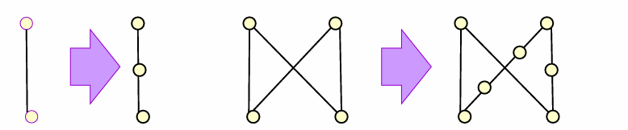
homeomorphic同胚的 : the graph \(G_1=(V_1,E_1)\) and \(G_2=(V_2,E_2)\) are called homeomorphic if they can be obtained from the same graph by a sequence of elementary subdivision.
【Theorem 2】 A graph is nonplanar if and only if it contains a subgraph homeomorphic to \(K_{3,3}\space or\space K_5\).
10.8 Graph Coloring¶
the dual graph对偶图 of the map
- Each region of the map is represented by a vertex.
- Edge connect two vertices if the regions represented by these vertices have a common border.
- Two regions that touch at only one point are not considered adjacent.
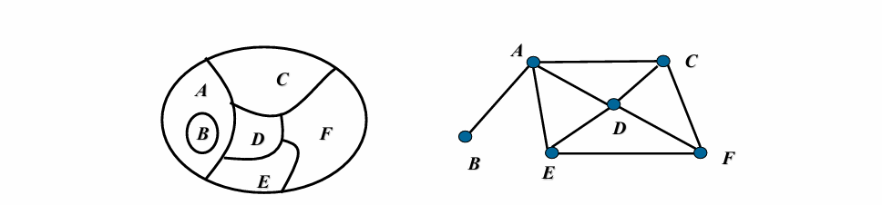
The chromatic numbers of a graph¶
Terminologies:
- Coloring: the assignment of a color to each vertex of the graph so that no two adjacent vertices are assigned the same color.
- chromatic number \(χ(G)\): the least number of colors needed for a coloring of this graph
The chromatic numbers of some simple graphs
-
The graph \(G\) contains only some isolated vertices. \(χ(G)=1\)
-
The graph \(G\) is a path containing no circuit. \(χ(G)=2\)
-
\(C_n(n \geq 3)\) , $\(\begin{cases} \chi(C_n) = 2 & \text{if } n \text{ is even} \\ \chi(G) = 3 & \text{if } n \text{ is odd} \end{cases}\)$
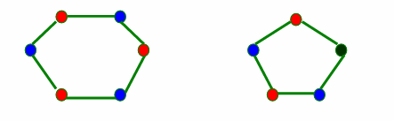
- \(K_n\)
\(χ(K_n)=n\) \(χ(K_n-e)=n-1\)
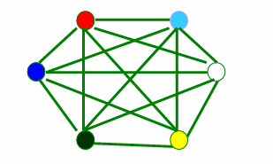
- \(K_{m,n}\)
\(χ(K_{m,n})=2\)
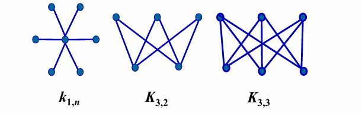
Algorithm for coloring simple graphs¶
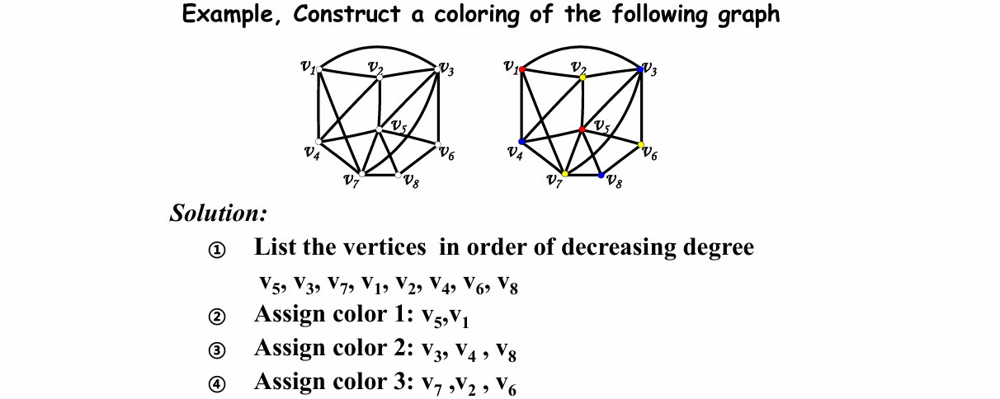
【 Theorem 1】 The Four Color Theorem
The chromatic number of a planar graph is no greater than four.